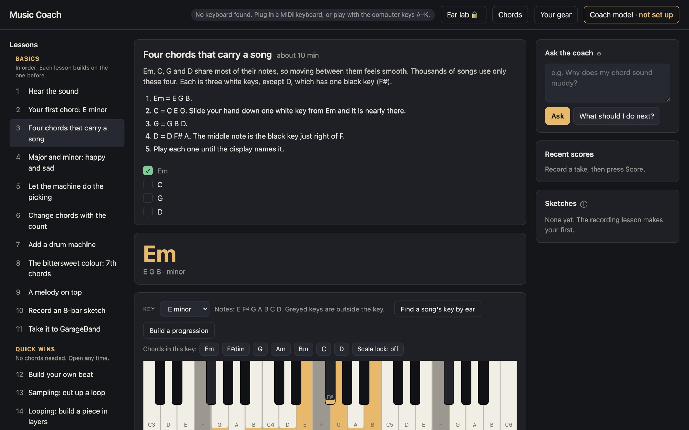
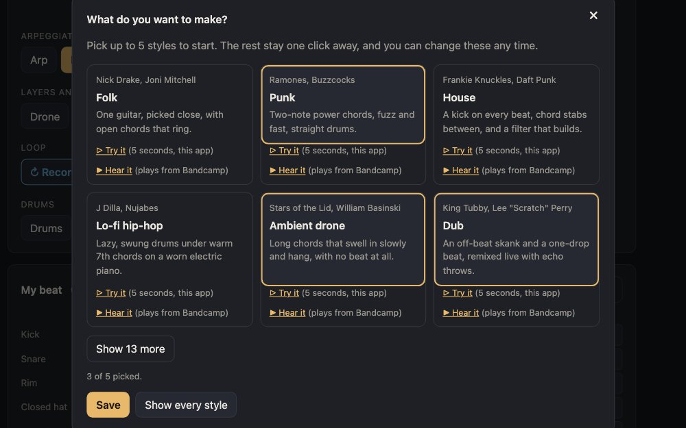
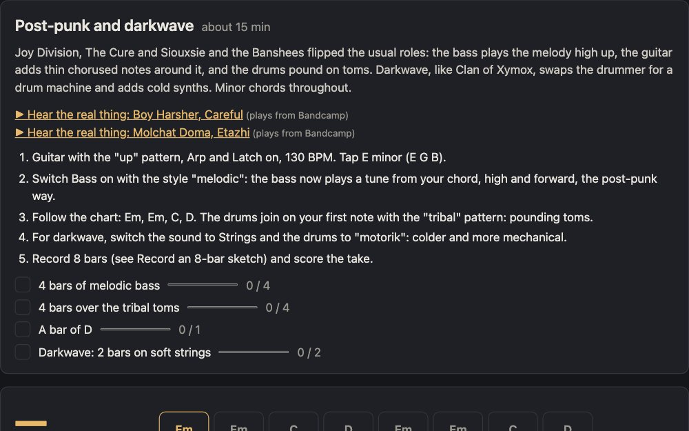

Learn to make music on your Mac,
and learn GarageBand while you do it.
Guided lessons take you from your first chord to a finished track. No instrument needed: a small MIDI keyboard helps, and your computer keys work too.
Mac only for now. Windows, and lessons for Logic Pro and Ableton Live, are on the way.

Why this exists
I built Music Coach because I was lost. I had GarageBand, a small keyboard and plenty of plugins, but no sense of how it all fits together, and not much patience for learning each tool from its manual. I wanted to make something first and understand it along the way. If that sounds like you, this is for you.
— Eve, Stylus Nexus
What you learn
Make music first
Chords, a drum machine, an arpeggiator that does the picking for you, a looper and a sampler. Everything you play already sounds good, so you hear progress from the first note.
Then learn GarageBand
Take your sketch into GarageBand and learn its tools step by step, with real screenshots: tracks, the grid, the Piano Roll, mixing, fades and exporting a song, and how to make your instruments sound real. Optionally, carry it on to GarageBand on your iPhone or iPad.
Lessons that notice
Short lessons tick themselves off as you play. A take coach scores chords, timing, feel, sound and ending from what it measured, and names one thing to try next.
Your gear, by name
It finds the plugins on your Mac and sorts them by what they do; with a coach model, it describes ones it doesn't recognise too. Lessons name your own gear when you have it, and GarageBand's built-in effects when you don't.
Styles
Pick up to 5 of 19 (to start): folk, punk, house, lo-fi hip-hop, ambient drone, dub, kosmische, shoegaze, ambient techno, Afrobeat, bossa nova, lounge pop, post-punk and darkwave, gothic rock, minimal wave, classical minimalism, Eno-style ambient, new wave and dark ambient. Each has a 5-second taste played by the app, and a real record to hear in full on Bandcamp. Every starter style works on a Mac with nothing extra installed.


Get started
- A Mac with GarageBand 10.4.14 or later (free; macOS 15.6+)
- Google Chrome
- Python 3.9 or newer
- A MIDI keyboard (optional)
- Download Music Coach about 1 MB
Unzip it, and drag Music Coach to your Applications folder. - Right-click Music Coach and choose Open. You only do this the first time: the app isn't notarized yet.
- Chrome opens the app. Press Start, tell it what gear you have (or skip), and open lesson 1.
Developer? Run it from the code
git clone https://github.com/stylusnexus/music-coach.git cd music-coach ./music-coach
./music-coach shortcut puts a double-click app for this copy on your Desktop.
Why doesn't my instrument sound like a real one?
Most of the difference is how the notes are played, not which sound you pick. These work on any track in GarageBand:
- Write what the real instrument could play. A guitar has six strings, so spread a chord out the way they would: E major, low to high, is E B E G♯ B E, not three notes bunched together. Keep a bass line to one note at a time, low down. Wrong notes sound fake even with a great sound.
- Vary how hard each note is hit. Real players never hit two notes the same. In the Piano Roll, select notes and change their velocity. Make the notes on the beat a little louder than the ones between.
- Loosen the timing. Notes locked exactly to the grid sound robotic. Turn off Edit > Snap to Grid, then nudge a few notes slightly early or late. For a strum, spread the chord's notes 10 to 30 milliseconds apart: low string first on a down-strum, high string first on an up-strum.
- Vary how long notes last. Drawn notes all run the same length and never stop. Real players shorten some notes and leave gaps; horn and wind players stop to breathe. Overlap string notes slightly so they connect, and hold the sustain pedal on piano.
- Give it a room. A little reverb makes it sound played in a space. Run an electric guitar through Amp Designer and the Pedalboard, like a real amp and pedals.
More ways:
- No pedal or mod wheel? Musical Typing (Command-K) has both: Tab is the sustain pedal, and 4 to 8 move the mod wheel (3 sets it back). On Studio Strings and Studio Horns, the mod wheel makes long notes swell and fade.
- Use recordings. Drummer plays like a session drummer, with human timing and feel. Apple Loops (press O) with a blue icon are audio recordings, often of real players; green ones are MIDI.
- Record the real thing. With a microphone and headphones you can record a voice, a shaker or hand claps.
- Use better sounds. In GarageBand, choose GarageBand > Sound Library > Download All Available Sounds, then pick instruments from the Library (press Y). Sample libraries and instrument plugins you own usually sound more detailed still; the Your gear window lists them.
The practice room's own sounds are simple stand-ins, there so you can hear chords and rhythm while you learn. Once GarageBand's full Sound Library is downloaded, its guitar switches to a recorded 12-string.
A coach that stays on your Mac
Ask questions
"Why does my chord sound muddy?" Answers come from a model you choose: one running on your Mac in LM Studio, or bring your own key for OpenAI, Anthropic, or a service like Ollama or OpenRouter.
Private by default
Your progress, gear list, sketches and key stay in local files. The app only goes online to reach the coach model you picked, or when you press Hear it to play a style's track from Bandcamp. The coach model gets your questions, and the names of your gear and of plugins the app doesn't recognise, so it can sort them; never your files or recordings. No account.
Works without it
Lessons, the studio and take scores all work with no model at all. Only the written summaries and questions need one.